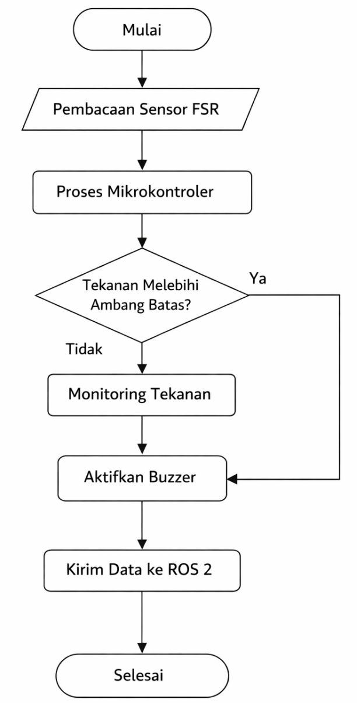
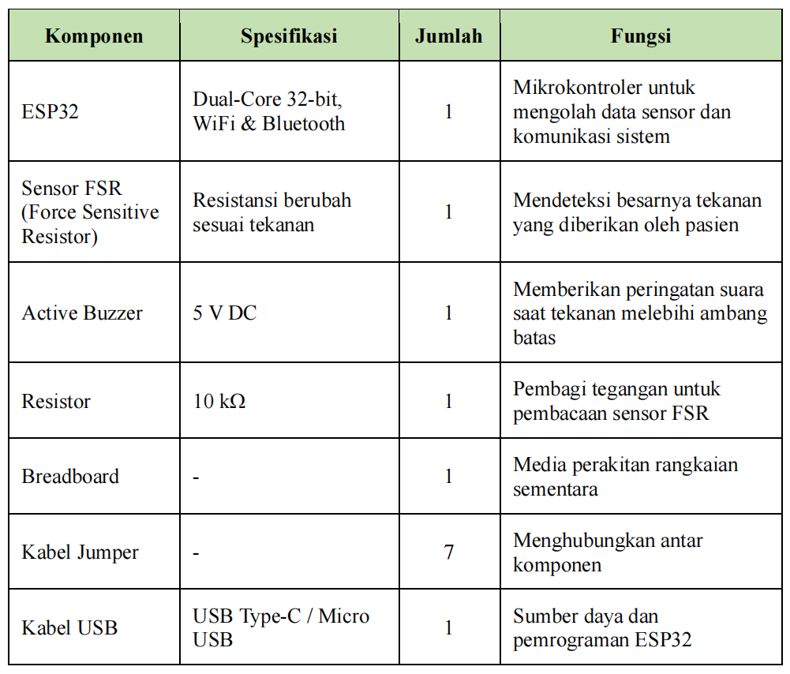
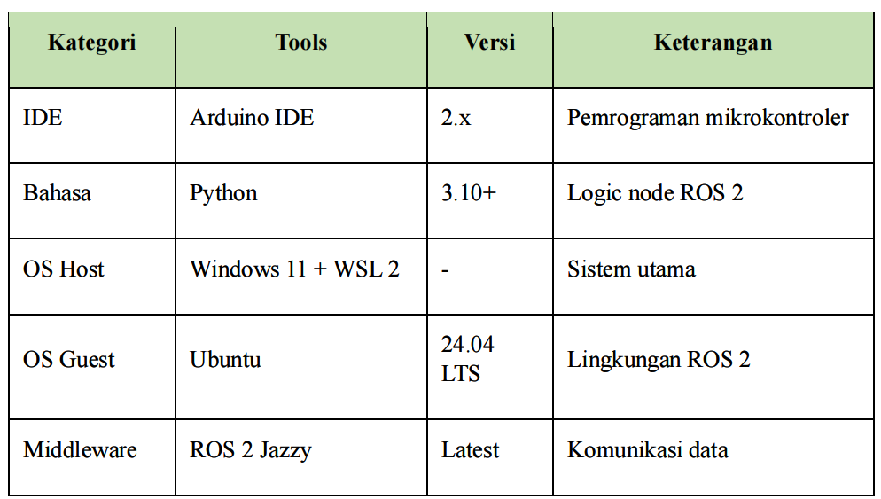
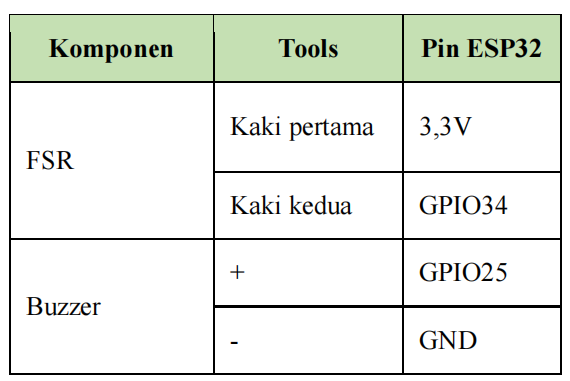
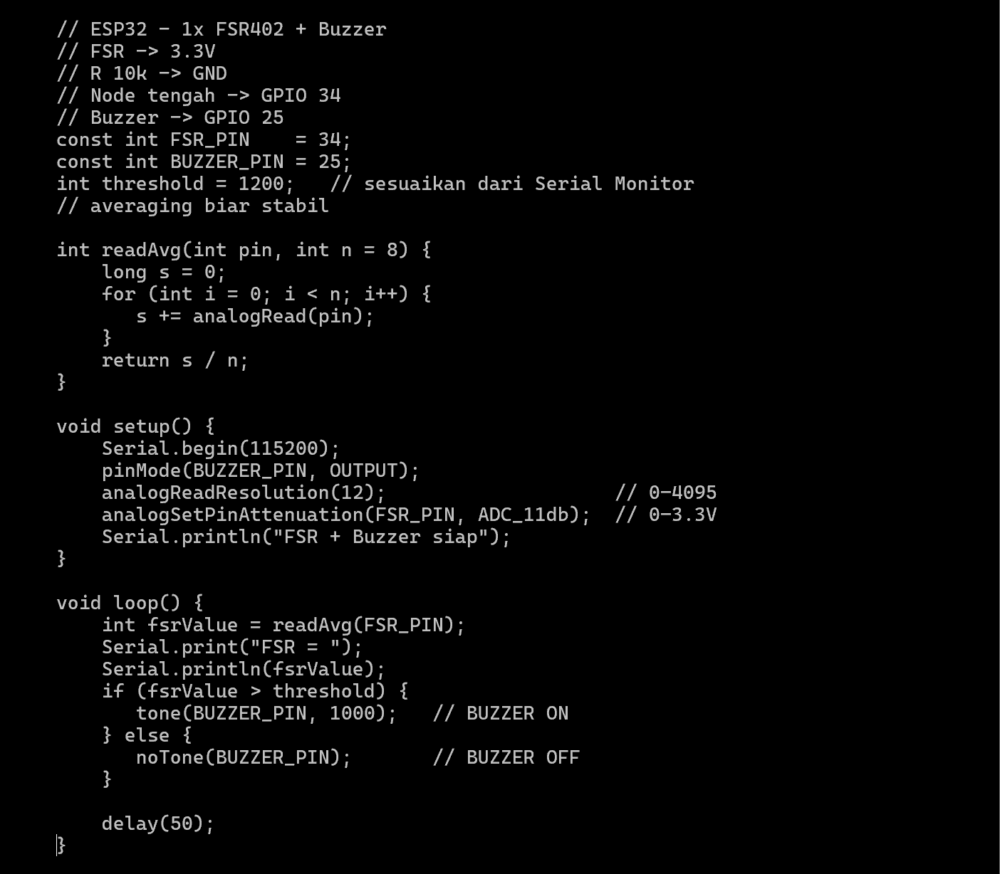
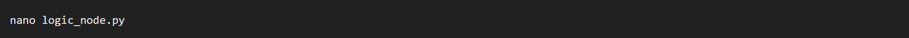
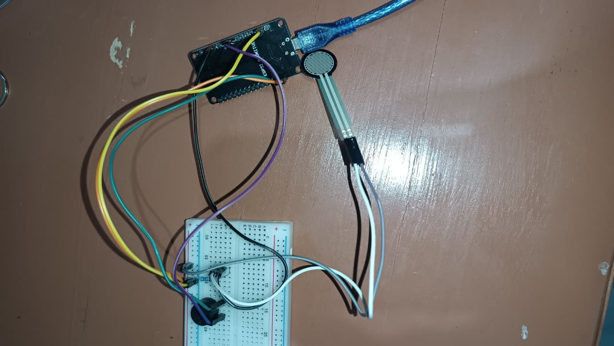

Sistem Monitoring Tekanan Berbasis ROS 2 Menggunakan Sensor FSR
Nama: Apri Ayu Lia
Program Studi: Teknik Biomedis
Institusi: Institut Teknologi Sumatera (ITERA)
Mata Kuliah: Robotika Medis
Pemantauan kondisi pasien secara berkelanjutan merupakan aspek krusial dalam pelayanan kesehatan, khususnya pada pasien dengan mobilitas terbatas. Tekanan berlebih akibat posisi statis dapat menyebabkan luka tekan (pressure ulcer).
Smart Pressure Alert System dikembangkan menggunakan sensor Force Sensitive Resistor (FSR) dan buzzer sebagai peringatan dini. Integrasi dengan ROS 2 memungkinkan pemantauan real-time dan pengolahan data lebih lanjut.
Pasien dengan keterbatasan gerak berisiko mengalami tekanan berlebih akibat posisi statis dalam waktu lama.
Pemantauan manual tidak dapat dilakukan secara kontinu dan sangat bergantung pada tenaga medis.
Sistem ini memberikan peringatan otomatis menggunakan buzzer saat tekanan melebihi ambang batas.




ESP32 diprogram untuk membaca sensor FSR dan mengaktifkan buzzer ketika tekanan terdeteksi.


